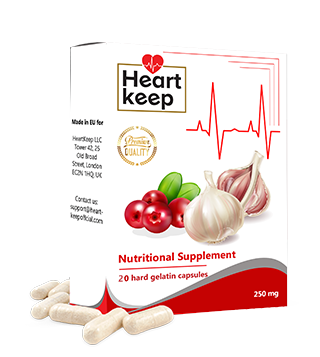

According to an 72 year old cardiologist, age isn’t a defect to life and health. She further shares the secret to her exceptional healthy lifestyle and life span.
Adimu Kamau, a prominent cardiologist from Kenya left her job when she got to 60 years of age. She, however, didn’t agonize in old age, neither did it affect her physically nor mentally. She has been retired for as long as 12 years and maybe the pension fund isn’t her biggest fan, but at 72 years old she looks and obviously feels like an 60 year old.
The secret behind longevity in an aging person is in the blood vessels. As long as they are clean and healthy, you could end up living for up to 120 years and even more. And the retired cardiologist is a living testament to that effect.
One of our reporters was able to secure an interview session with her. Dr. Kamau gives a detailed explanation of the methods she followed to ensure her blood vessels were clean, which is responsible for her extended life span.
She exchanged pleasantries with a lot of people on her 72th birthday.- When asked, “Dr. Kamau, you have more often than not made us understand that clean blood vessels are essential for good health. What is your reason for this?”
- “It’s quite an obvious answer. The function of all internal organs and systems is dependent on the quality of blood circulation. In case you are not clear on what blood circulation is, it is the supply of oxygen and nutrients and is equally responsible for the expulsion of carbon dioxide and waste products got from metabolism in the internal organs. During childhood and the youthful age, one is very active, blood vessels are young elastic and still very clean and so all of the body’s organs are nourished perfectly. When old age slowly begins to set in, we are no longer as active, and so these vessels are getting congested. A variety of factors are responsible for this, like the habit of smoking, poor nutrition, living in an unhealthy environment, and the natural one like lipid deposition which is seen to take place in every human as they get older”
Imagined pipes, filled with rust in them, the result of water that supplied through those pipes is increased in pressure and bad taste of water. This further explains what happens with the clogged vessels. When cholesterol and other substances are deposited in the blood vessels, the blood pressure increases which of course is the major cause of hypertension as the blood is now dirty and blood circulation is getting worse. The result of this is all of the other organs in the body end up suffering too after all the make up the entirety on the human body.
So with time age is gradually setting in. but as long as the blood vessels are kept clean and healthy from time to time, one can actually be alive for as long as 120 years without actually falling sick. You find out that all the organs and very importantly the brain is seen to function optimally. This implies that having the bloodstream kept clean can significantly improve health and prolong life.
 This is no theory because it is something I practice and recommend to all of my patients, and many that took
my advice have lived longer than their peers.
This is no theory because it is something I practice and recommend to all of my patients, and many that took
my advice have lived longer than their peers.
“What diseases are caused by blood vessel obstruction?”
“As I stated earlier, all the organs in the body suffer from this too, but the organs that are affected first are the ones directly linked to blood circulation, which is called the cardiovascular system.”
Once the blood vessels are contaminated, there are other diseases that arise as a result as listed below;
- Atherosclerosis: A situation where the vessels stop functioning, the tiny veins are blocked completely while the larger veins are filled with cholesterol deposits.
- Ischemic heart disease: This is caused by the constant loss of blood in the coronary vessels which leads to vascular contamination of the veins and arteries.
- Hypertension: When the blood vessels get cramped due to obstruction, it causes the blood pressure to spike.
- Varicose vein enlargement: Most seen to occur in women, it basically causes distress to the legs. One of the repercussions of this condition is the development of hemorrhoids.
- Stroke: Once there is damage in the supply of blood to the brain tissues, the result is the nerve ending start to die which lead to depletion of certain organ functions.
- Venous and Arterial thrombosis: Blood clots are seen to start forming in the blood vessels if the contamination lasts for a lengthy period of time and that could end up with entire damage of the vessel, further causing individual cells to die in one organ or the other. A situation whereby the thrombus finds its way into the blood, it could result in blocking the blood vessels in the heart which is responsible for heart attack and 70% of this heart attack cases always end in death.
Types of heart disease
Dilated ventricle

Heart failure
A lot of deaths that are health-related are caused more by cardiovascular obstruction than other ailments put together. Doctors know about this and also are aware of the importance of cleansing blood vessels, but unfortunately, this is not a regular practice in the medical field. To treat hypertension, the pill is mostly prescribed to help in lowering blood pressure. However, these pills are just a temporary fix and doesn’t cure the condition, the only way is to get the blood vessels cleaned. For more than half of a century people in the western parts that age range is from 40 and above need this procedure and are well aware of its importance. Why we tend to ignore its relevance is somewhat confusing.
“Are the symptoms that make it easy to know when vessels are obstructed?”
“Of course they are, some of which include:”
- Migraine
- Chronic fatigue
- Insomnia
- Poor memory
- High blood pressure
- Dyspnea and angina
- Crumbling eyesight and hearing ability
- Aching muscles and joints
It really doesn’t matter if you are experiencing any of the above symptoms or not, once you have clocked 30 years and above, it is important to have your vessels cleansed at least once in every 5 years interval. It would go a long way in helping you live healthily.
As a matter of fact, blood vessels gather obstructions rather quickly than we imagine, especially in the elderly. This isn’t just as a result of bad eating habit, by consumption of things like sausage or even eggs at times will produce deposits of cholesterol. And as time goes, these deposits are building up.
“Could you share your secret on how you got your blood vessels cleansed?”
Up until just recently, it took me months to go through the blood vessel cleaning process. I took the time out to select some herbs, went in search of some in the market, some I ordered online and then I prepared them. This is a procedure I no longer follow because some of my foreign colleagues from the Institute of Cardiology have just a while back manufactured a very good and affordable food supplement, mainly meant for cleaning blood vessels called HeartKeep. Its design purpose is to normalize blood pressure and improve hypertension but is able to do this by cleaning the arteries and veins. Thus it fulfills the purpose of living a long and healthy life.
 Order HeartKeep at 50% discountThis HeartKeep does a good job of perfectly cleaning high blood vessels obstruction just within one to two weeks of constant intake.
I equally want to ensure that you are aware of the fact that this food supplement is free of chemicals but contains only high concentrated extracts from plants that are useful in the cleaning of blood vessels. So it isn’t harmful but rather is of nutritional value to the body.
As many patients that still contact me for consultations and the blood-cleansing procedure. I started recommending this food supplement and it has been very helpful thus far.
You can visit the site of the Institute Of Cardiology for the official statistics of blood vessel cleaning that was gotten from the results of clinical research. The patients that participated in the studies were approximately 2000 in number and all have taken HeartKeep.
Results of the survey:
- Blood pressure was brought to normal after taking the food supplement for just two days. As stated by 99% of the participants of the study.
- 97% of the survey participants noticed improvements in their heart rate rhythm
- According to about 99% of those that took part in the survey, cholesterol content was completely cleaned out.
- Efficient treatment of other chronic diseases.
- All participants reported a general improvement in health.
- All participants didn’t experience any side effects from taking HeartKeep.
”What is the cost of HeartKeep and where can it be purchased?”
I’m quite certain you know that I am retired and the prices of medicine are quite expensive to get in general. So I see no reason in recommending an expensive drug to anyone. HeartKeep is very affordable and is presently sold at a discounted price of 50%
This food supplemented is basically responsible for fighting against hypertension.
Below are more details on how to get HeartKeep and have it delivered to any country, so to order this product all you need do is:
- Fill in the form on the official website.
- A coordinator would then contact you to confirm your delivery address.
- The delivery time is usually between 1 to 5 days and you would have a courier person stop by your address to deliver HeartKeep order to you.
To ensure the blood vessels purity is maintained, I personally recommend you repeat the course once every 1 to 2 years. Mainly a necessity for the older ones. Having clean blood vessels are a guarantee for good health.
“I appreciate the time you have taken to partake in this very detailed and educative interview, Thank you, Dr. Kamau”
During an off the record discussion with Dr. Kamau, she said she still very much cares for her vegetable garden and occasionally helps her children, retired as well. Her 91 year old husband joins her in doing an annual course of blood vessel cleansing. The doctor’s opinion of both of them is he thinks they probably would have died a long time ago like most of their peers if they hadn’t been practicing the blood vessel cleaning process.
Important Notice!
HeartKeep can only be ordered from the official website and nowhere else.
50% Discount!
PROMOTION WILL END AT:
New Price {PRICE}

Comments
Aasir Nyeri
“I have been taking HeartKeep for about a month now, and though not on a daily basis. I soon started feeling a lot better. My entire immune system feels a lot stronger, with the level of energy I exert now, it feels like I am 10 years younger. I am actually 72 years old.”
Chineye Kisumu
“Learned about everything there is to know about HeartKeep in details from their official site. I must admit, very amazing and impressive too.”
Ndwiga Mombasa
“Since I started taking HeartKeep, I don't need other pills and medicaments anymore. HeartKeep normalized my blood pressure.”
Dhakiya Kakamega
“I have got no more high blood pressure. I started to use HeartKeep 1 month ago and I feel much, much better when I take it. Thank you so much!”
Faraja Nyeri
“I have tried it, also. DEFINITELY IT WORKS!!!”
Cora Mombasa
“About 2 months ago I did use HeartKeep to cleanse my blood vessels. And I am very impressed with the result. I noticed I was getting tired easily and quite frequently dues to blood vessel obstructions, but now I am quite energetic. Now I can do twice as much work during the day, I also was experiencing severe headaches, but all of that is gone as well. My overall health condition has improved, so I didn’t hesitate to order more, taking advantage of the stock. I am truly grateful. Thank You.”